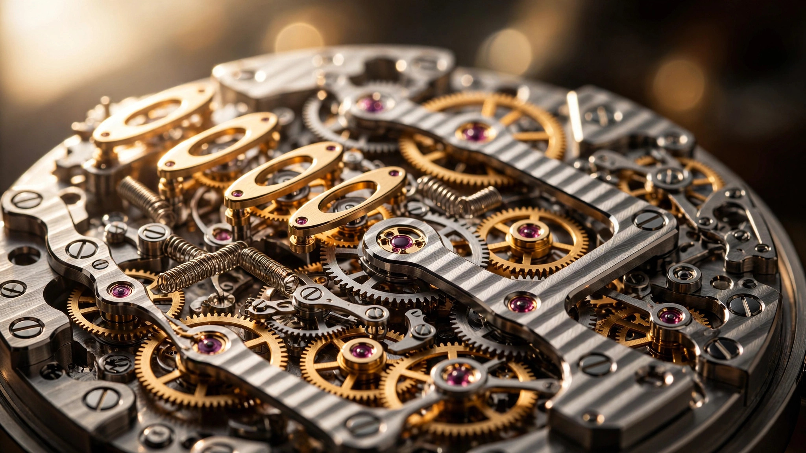

Half a Millimeter Wide: The Flexure Springs That Tell Patek's Celestial When the Sun Rises

Sunrise and sunset are among the oldest measurements human beings ever attempted. Long before anyone subdivided the day into hours, people watched the sun cross the horizon and understood that those moments encoded something fundamental about where they stood on the planet and what season they inhabited. Translating that observation into a mechanical wristwatch is genuinely difficult, and for most of watchmaking history, nobody bothered trying.
Patek Philippe has now bothered. Its Celestial Sunrise and Sunset Ref. 6105G, unveiled at Watches and Wonders 2026, represents over five years of development and six patent applications directed at a single problem: how to display the precise times of sunrise and sunset on a wristwatch dial, account for daylight saving time corrections, and keep the whole mechanism thin enough to wear. What makes the solution remarkable is not the ambition but the method. Patek eliminated the most fundamental component in the traditional sunrise mechanism, the pivot, and replaced it with something that bends.
Why Pivots Cause Problems
In a conventional sunrise-sunset mechanism, the core architecture is straightforward. A cam profiled to match the annual variation in sunrise or sunset time rotates once per year. A feeler rests against this cam, and as the cam turns, the feeler translates the cam's radius into a positional change. A rack, connected to the feeler, converts that linear displacement into rotation of the sunrise or sunset hand.
Simple enough in concept. In practice, the rack is mounted on a pivot, and it is this pivot that introduces a geometric error. Because the rack swings through an arc rather than moving in a straight line, its displacement does not correspond linearly to the cam radius. At small deflections the error is negligible. At larger deflections, which occur at higher latitudes where seasonal variation in daylight is more pronounced, the arc deviates meaningfully from a straight path. Geneva sits at 46°12' north, where sunrise shifts between roughly 05:30 and 08:30 across the year and sunset between 16:30 and 21:30. A six-hour swing on each cam demands substantial rack travel, making the arc-versus-line error real.
Watchmakers have traditionally compensated by distorting the cam profile itself. Instead of cutting a cam that directly encodes the astronomical data, they cut one that preemptively corrects for the geometric error the pivot will introduce. It works, but it adds complexity to the cam design, ties each cam irreversibly to its specific rack geometry, and introduces secondary errors if any of the assumptions about the mechanism's tolerances prove wrong. Patek's engineers looked at this arrangement and decided to remove the root cause rather than compensate for its effects.
A Structure That Bends Instead
Replace the pivoting rack with a linear rack, and the geometric error vanishes. If the feeler moves in a straight line, its displacement maps directly to the cam's radius at every point, no correction needed. But eliminating the pivot creates a new challenge: how do you guide a linear element and return it to its resting position without adding sliding guides, return springs, and the friction and play that come with them?
Patek's answer is a compliant mechanism, a class of mechanical device that derives its motion from the elastic deformation of its own structure rather than from hinges, pivots, or separate springs. In the 6105G, the entire feeler assembly for each cam is fabricated as a single monolithic component, almost certainly produced via LIGA, a lithographic manufacturing technique adapted from semiconductor fabrication. LIGA stands for Lithographie, Galvanoformung, Abformung (lithography, electroforming, molding), and it allows the production of extremely precise, high-aspect-ratio metallic microstructures.
Each assembly incorporates a linear rack guided by two pairs of flexible strips just 0.48 mm wide. As the cam rotates over its annual cycle, the rack is displaced along its length in direct proportion to the cam's radius. The flexible strips bend elastically to accommodate this displacement, simultaneously providing the restoring force that keeps the feeler pressed against the cam and the guidance that constrains the rack to purely linear motion. No separate return spring. No sliding contact. No pivot. Guidance and restoring force reside in the same elements, and those elements never exceed half a millimeter across.
Compliant mechanisms showed up twice at Watches and Wonders 2026. TAG Heuer used a different variant in the Evergraph chronograph, and Patek itself had experimented with the concept in the 2017 Aquanaut Advanced Research Ref. 5650G. But the 6105G deploys compliant technology in a production grand complication for the first time, reading two cams simultaneously through twin flexure assemblies that add just 0.48 mm to the movement's total height. Combined, the 121 additional components for the sunrise and sunset function increased the caliber's thickness by only 1.12 mm.
Latitude Written in Metal
Both cams are kidney-shaped, or ovoid, each making one full rotation per year. One encodes sunrise, the other sunset. Their profiles are not interchangeable because the annual curves of sunrise and sunset are not mirror images of each other. Axial tilt causes asymmetry: the rate at which sunrise advances in spring differs from the rate at which sunset retreats in autumn. Each cam must be individually profiled to encode the correct function for its respective event.
Latitude determines how exaggerated the cam profile needs to be. At the equator, where day length barely changes across the year, both cams would approach perfect circles. At the poles, where the sun disappears for months, the cams would require extreme lobes. Geneva's latitude, 46°12' north, produces moderate but meaningful variation. A six-hour annual swing in each event demands cam profiles with sufficient lobe amplitude to drive the racks through their full range while maintaining the resolution needed to distinguish changes of a few minutes per day.
Because the compliant mechanism ensures perfectly linear motion, Patek's cam profiles can encode the astronomical data directly without the distortion corrections required by pivot-based systems. What you cut into the metal is what you read from the mechanism. If the cam faithfully represents the sunrise curve for 46°12' north, the display will faithfully reproduce it. No secondary calibration layer sits between the data and its expression.
Patek calibrates the watch for Geneva. Changing the location is theoretically straightforward since only the cam profiles and the star chart overlay need to change. Longitude introduces a fixed offset, easily accommodated by rotating the cam's phase angle. Latitude demands new cam profiles altogether. Patek has stated that the watch is fixed to Geneva, but the architecture accommodates customization, and the brand has historically obliged important clients.
Solving Daylight Saving Time in One Lever
Sunrise-sunset complications and daylight saving time do not coexist gracefully. When civil time jumps forward in spring or back in autumn, the cams do not advance by a full day. They advance by one hour out of twenty-four, which translates to a tiny fraction of their annual rotation. Since the cam profiles encode day-to-day progression, a sub-daily displacement produces no meaningful change in the indicated sunrise or sunset time. After the spring time change, a conventional sunrise-sunset watch will display times that are one hour off from civil reality for the next six months.
Patek solved this by making the scale itself mobile. Instead of moving the sunrise and sunset hands, the DST correction shifts the date disc they are read against. Pushers at 9 o'clock (summer time) and 10 o'clock (winter time) activate a single lever that pivots about its axis and transmits motion simultaneously to both sides of the mechanism.
On one side, a pin connection rotates the date disc by exactly one hour's worth of angular displacement. This repositions the entire sunrise-sunset scale relative to the hands without touching the cam-driven mechanism. On the opposite side, a toothed sector engages two corrector fingers. One finger drives the date drive wheel, which meshes with the hour wheel, jumping the hour hand by exactly one hour. A second finger acts on the date star wheel, advancing or reversing it by one tooth to keep the date pointer aligned with the rotated disc.
Everything happens in a single motion. Hour hand, date pointer, and sunrise-sunset scale adjust together. A jumper holds the lever in its new position. Meanwhile, the sunrise and sunset hands have not moved at all, because their relationship to the astronomical data encoded in the cams has not changed. Only their relationship to civil time has been corrected, and that correction lives entirely in the repositioned scale they are read against.
Three Discs, Three Rates
Below the sunrise-sunset mechanism, the dial is a kinematic model of the sky visible from Geneva. Three superimposed discs, each 0.2 mm thick, rotate at different rates driven by separate gear trains.
Uppermost sits a sapphire crystal disc carrying a printed star chart with major constellations and the Milky Way. Stars are printed on the upper surface, the Milky Way on the lower, creating a subtle parallax depth. This disc rotates once per sidereal day, approximately 23 hours, 56 minutes, and 4.1 seconds, matching the apparent rotation of the fixed stars as Earth spins. An elliptical aperture printed on the watch crystal marks the portion of sky visible from Geneva's latitude. As the disc rotates, stars drift into and out of this bounded viewport, rising in the east and setting in the west.
Beneath the star chart, a mineral crystal disc coated in black PVD carries a cutout representing the Moon. It rotates slightly slower than the sidereal disc, completing one revolution every 24 hours, 50 minutes, and 28.328 seconds. This rate tracks the Moon's eastward drift relative to the fixed stars, so its position against the star chart shifts progressively from night to night.
A third mineral crystal disc displays the lunar phase. Unlike the first two discs, it is not driven by a simple gear ratio from the going train. A compact planetary gear mechanism generates the synodic period of approximately 29 days, 12 hours, 44 minutes, and 2.82 seconds between identical lunar phases. Accuracy is such that correction is needed only after several millennia of continuous operation.
Combined, these three kinematic layers produce a mechanically coherent model in which the Moon changes phase, drifts relative to the fixed stars, and occupies its correct position in the night sky, all driven by a single mainspring through a web of gear trains operating at three distinct rates.
426 Parts in 7.93 Millimeters
Caliber 240 C LU CL LCSO is the full designation. It builds on the ultra-thin Caliber 240 platform, which dates to 1977 and has been continuously refined since. A 22-karat gold off-center micro-rotor handles automatic winding. The movement runs at 21,600 vibrations per hour (3 Hz) on a Gyromax balance with a Spiromax silicon hairspring. Accuracy falls within -1/+2 seconds per day, impressive for a movement carrying this level of complication.
At 38 mm across and 7.93 mm thick, the full caliber assembly sits well within the 47 mm case. Total component count reaches 426, with 51 jewels. Power reserve ranges from 38 to 48 hours depending on the state of the mainspring. This is not a long power reserve, but the movement was never designed around energy storage. It was designed around thinness, and in that contest 7.93 mm for a movement displaying civil time, date, sunrise, sunset, star chart, lunar position, and lunar phase is a number that speaks for itself.
Patek chose a solid caseback rather than a display window. A sapphire crystal would add thickness, and anyone spending $437,610 on a 6105G likely owns another Patek with a visible Caliber 240. Instead, the caseback carries the same X-shaped relief motif that runs across the caseband, inspired by the tubular cross-bracing of spacecraft and lunar modules. It converges around a Calatrava cross at the center.
Old Knowledge, New Geometry
Nothing about this watch pretends that tracking sunrise is a new idea. Longines put a sunrise-sunset complication in a wristwatch in 1989 with the Ephemerides Solaires. Audemars Piguet followed in 2000, Vacheron Constantin added the complication to the Celestia and later the Solaria, and Krayon built the Everywhere, which for the first time allowed the owner to adjust the sunrise and sunset display for any location on Earth.
What Patek contributed is not the idea but the geometry. By removing pivots from the feeler mechanism, the manufacture eliminated a layer of error correction that every prior implementation required. By making the scale mobile rather than the hands, the DST problem was solved without touching the astronomical core of the movement. By fabricating the compliant mechanism as a monolithic LIGA component, assembly complexity dropped and precision increased simultaneously. Each decision addressed a specific engineering weakness in the existing approach, not by working around it but by restructuring the mechanism so the weakness could not arise.
Five years and six patents produced a watch that does something watches have done before, but does it without the compromises that made earlier versions acceptable rather than precise. In a field where tradition often outranks innovation, Patek chose the opposite. It bent the springs instead.